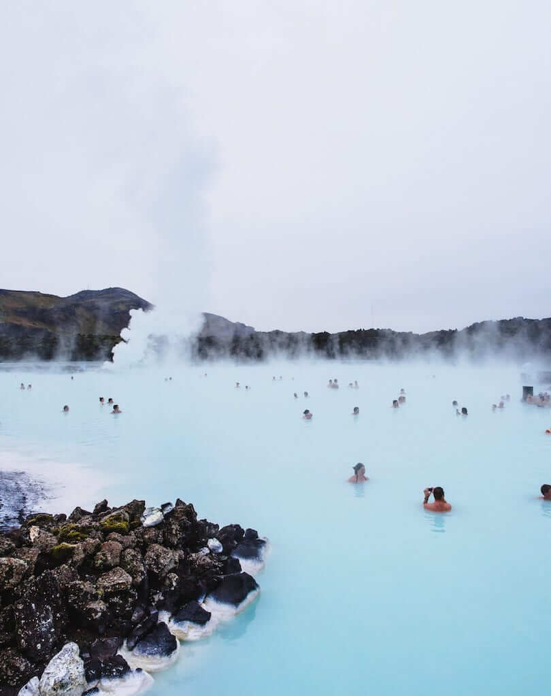
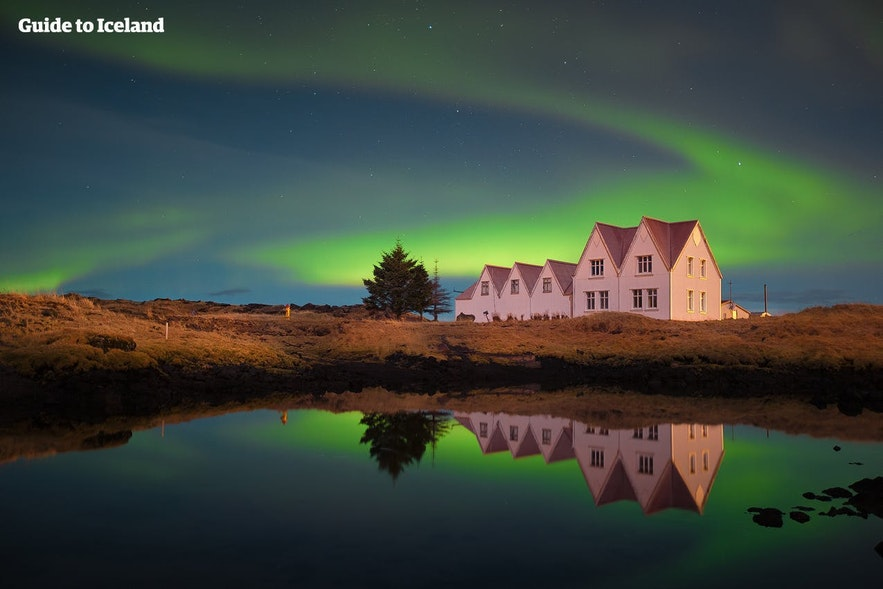

Iceland is famous for being called the Land of Fire and Ice because of its volcanoes and glaciers. It is dotted with natural wonders such as The Blue Lagoon and Dettifoss Waterfall. Iceland is also known for its rich cultural history, Norse mythology, folklore, and having no official family names. Iceland is famous for a lot of natural wonders like glaciers, active volcanoes, and geysers. However, it is also known for the Northern Lights, whale watching, jailed bankers after the financial crisis and some very strange delicacies.
If you’ve been dreaming of bathing in Iceland you’re not alone. Iceland is known for its many naturally occurring hot springs, and National Geographic named the most famous one, the Blue Lagoon, as one of the 25 Wonders of the World. The Blue Lagoon is one of the most visited attractions in Iceland, and it’s hard not to be enchanted by the milky blue waters in the middle of a black lava field. The water sits at a comfortable 38-39 °C (100 °F) so it’s perfect for a soak. The water is naturally heated and derived, but the shape of the pool was actually a man-made accident in 1976.
Iceland is located at a high latitude, meaning there is no darkness from mid-April until mid-August. In this period of time, no Northern Lights can be observed. The Northern Lights season is from late August to mid-April. However, from late September to late March, it is dark after 6 pm, and one enjoys maximum chances. The northern lights, also known as the aurora borealis, are the visible result of solar particles entering the Earth’s magnetic field and ionizing high in the atmosphere. The ionization gives them their colors, usually green, but occasionally purple, red, pink, orange, and blue.